|
Companion to Applied Regression
|
Análise do modelo
- Resumos.
- Estimativas e erros padrões.
- Intervalos de confiança.
- Elipse de confiança
- Análise de resíduos.
- Medidas de influência.
- Preditos.
- etc.
1 Funções
2 Exemplos
2.1 Resumo e intervalo de confiança
Modified Functions for Summarizing Linear, Generalized Linear, and Some Other Models {.tabset .tabset-fade}
2.1.1 Exemplo 1
## Call: lm(formula = prestige ~ education + income + type, data = Prestige)
## Standard errors computed by hccm
##
## Coefficients:
## Estimate Std. Error t value Pr(>|t|)
## (Intercept) -0.6229292 5.2381025 -0.119 0.905593
## education 3.6731661 0.6982758 5.260 9.16e-07 ***
## income 0.0010132 0.0002672 3.793 0.000265 ***
## typeprof 6.0389707 3.7951209 1.591 0.114948
## typewc -2.7372307 2.4384681 -1.123 0.264531
## ---
## Signif. codes: 0 '***' 0.001 '**' 0.01 '*' 0.05 '.' 0.1 ' ' 1
##
## Residual standard deviation: 7.095 on 93 degrees of freedom
## (4 observations deleted due to missingness)
## Multiple R-squared: 0.8349
## F-statistic: 120.2 on 4 and 93 DF, p-value: < 2.2e-16
## AIC BIC
## 669.02 684.522.1.2 Exemplo 2
## Coefficients:
## Estimate Std. Error t value Pr(>|t|)
## (Intercept) -0.6229292 5.2275255 -0.119 0.905
## education 3.6731661 0.6405016 5.735 1.21e-07 ***
## income 0.0010132 0.0002209 4.586 1.40e-05 ***
## typeprof 6.0389707 3.8668551 1.562 0.122
## typewc -2.7372307 2.5139324 -1.089 0.279
## ---
## Signif. codes: 0 '***' 0.001 '**' 0.01 '*' 0.05 '.' 0.1 ' ' 1
##
## Residual standard deviation: 7.095 on 93 degrees of freedom
## (4 observations deleted due to missingness)
## Multiple R-squared: 0.8349
## F-statistic: 117.5 on 4 and 93 DF, p-value: < 2.2e-16
## AIC BIC
## 669.02 684.522.1.3 Exemplo 3
mod.prestige <- lm(prestige ~ education + income + type, Prestige)
Confint(mod.prestige, vcov.=hccm)## Standard errors computed by hccm## Estimate 2.5 % 97.5 %
## (Intercept) -0.622929165 -1.102476e+01 9.778904256
## education 3.673166052 2.286529e+00 5.059803411
## income 0.001013193 4.826801e-04 0.001543706
## typeprof 6.038970651 -1.497387e+00 13.575328718
## typewc -2.737230718 -7.579545e+00 2.1050837232.1.4 Exemplo 4
## Call: glm(formula = lfp ~ ., family = binomial, data = Mroz)
##
## Coefficients:
## Estimate Std. Error z value Pr(>|z|)
## (Intercept) 3.182140 0.644375 4.938 7.88e-07 ***
## k5 -1.462913 0.197001 -7.426 1.12e-13 ***
## k618 -0.064571 0.068001 -0.950 0.342337
## age -0.062871 0.012783 -4.918 8.73e-07 ***
## wcyes 0.807274 0.229980 3.510 0.000448 ***
## hcyes 0.111734 0.206040 0.542 0.587618
## lwg 0.604693 0.150818 4.009 6.09e-05 ***
## inc -0.034446 0.008208 -4.196 2.71e-05 ***
## ---
## Signif. codes: 0 '***' 0.001 '**' 0.01 '*' 0.05 '.' 0.1 ' ' 1
##
## (Dispersion parameter for binomial family taken to be 1)
##
## Null deviance: 1029.75 on 752 degrees of freedom
## Residual deviance: 905.27 on 745 degrees of freedom
##
## logLik df AIC BIC
## -452.63 8 921.27 958.26
##
## Number of Fisher Scoring iterations: 4
##
## Exponentiated Coefficients and Confidence Bounds
## Estimate 2.5 % 97.5 %
## (Intercept) 24.0982799 6.9377228 87.0347916
## k5 0.2315607 0.1555331 0.3370675
## k618 0.9374698 0.8200446 1.0710837
## age 0.9390650 0.9154832 0.9625829
## wcyes 2.2417880 1.4347543 3.5387571
## hcyes 1.1182149 0.7467654 1.6766380
## lwg 1.8306903 1.3689201 2.4768235
## inc 0.9661401 0.9502809 0.98140422.1.5 Exemplo 5
## Estimate 2.5 % 97.5 %
## (Intercept) 3.18214046 1.93697359 4.46630794
## k5 -1.46291304 -1.86089654 -1.08747196
## k618 -0.06457068 -0.19839650 0.06867096
## age -0.06287055 -0.08830325 -0.03813509
## wcyes 0.80727378 0.36099360 1.26377557
## hcyes 0.11173357 -0.29200419 0.51679061
## lwg 0.60469312 0.31402218 0.90697688
## inc -0.03444643 -0.05099767 -0.018770932.2 Bootstrap
Bootstrapping for regression models
Simple front-end to the boot function in the boot package that is tailored to bootstrapping based on regression models. Whereas boot is very general and therefore has many arguments, the Boot function has very few arguments.
2.2.1 Exemplo 1
m1 <- lm(Fertility ~ ., swiss)
betahat.boot <- Boot(m1, R=199) # 199 bootstrap samples--too small to be useful## Loading required namespace: boot##
## Number of bootstrap replications R = 199
## original bootBias bootSE bootMed
## (Intercept) 66.91518 0.4882961 10.360816 67.97511
## Agriculture -0.17211 0.0018274 0.065117 -0.17129
## Examination -0.25801 -0.0170028 0.219465 -0.28358
## Education -0.87094 -0.0099972 0.194813 -0.88565
## Catholic 0.10412 -0.0022227 0.028737 0.10184
## Infant.Mortality 1.07705 -0.0044639 0.413928 1.094762.2.2 Exemplo 2
## Bootstrap bca confidence intervals
##
## 2.5 % 97.5 %
## (Intercept) 46.41658213 87.65860673
## Agriculture -0.29103635 -0.03751111
## Examination -0.61621997 0.45074897
## Education -1.21140430 -0.33422838
## Catholic 0.05116761 0.16630531
## Infant.Mortality 0.19922062 1.890754312.3 Comparação de estimativas de modelos diferentes
Print estimated coefficients and their standard errors in a table for several regression models.
Extracts estimates of regression parameters and their standard errors from one or more models and prints them in a table.
2.3.1 Exemplo 1
mod1 <- lm(prestige ~ income + education, data=Duncan)
mod2 <- lm(prestige ~ income + education + type, data=Duncan)
compareCoefs(mod1)## Calls:
## lm(formula = prestige ~ income + education, data = Duncan)
##
## Model 1
## (Intercept) -6.06
## SE 4.27
##
## income 0.599
## SE 0.120
##
## education 0.5458
## SE 0.0983
## 2.3.2 Exemplo 2
## Calls:
## 1: lm(formula = prestige ~ income + education, data = Duncan)
## 2: lm(formula = prestige ~ income + education + type, data = Duncan)
##
## Model 1 Model 2
## (Intercept) -6.065 -0.185
## SE 4.272 3.714
##
## income 0.5987 0.5975
## SE 0.1197 0.0894
##
## education 0.5458 0.3453
## SE 0.0983 0.1136
##
## typeprof 16.66
## SE 6.99
##
## typewc -14.66
## SE 6.11
## 2.3.3 Exemplo 3
## Calls:
## 1: lm(formula = prestige ~ income + education, data = Duncan)
## 2: lm(formula = prestige ~ income + education + type, data = Duncan)
##
## Model 1 Model 2
## (Intercept) -6.065 -0.185
## SE 4.272 3.714
## z -1.42 -0.05
## Pr(>|z|) 0.1557 0.9603
##
## income 0.5987 0.5975
## SE 0.1197 0.0894
## z 5.00 6.69
## Pr(>|z|) 5.6e-07 2.3e-11
##
## education 0.5458 0.3453
## SE 0.0983 0.1136
## z 5.56 3.04
## Pr(>|z|) 2.8e-08 0.0024
##
## typeprof 16.66
## SE 6.99
## z 2.38
## Pr(>|z|) 0.0172
##
## typewc -14.66
## SE 6.11
## z -2.40
## Pr(>|z|) 0.0164
## 2.3.4 Exemplo 4
## Calls:
## 1: lm(formula = prestige ~ income + education, data = Duncan)
## 2: lm(formula = prestige ~ income + education + type, data = Duncan)
##
## Model 1 Model 2
## (Intercept) -6.065 -0.185
## income 0.599 0.598
## education 0.546 0.345
## typeprof 16.7
## typewc -14.72.3.5 Exemplo 5
## Standard errors computed by list(vcov, hccm)Calls:
## 1: lm(formula = prestige ~ income + education, data = Duncan)
## 2: lm(formula = prestige ~ income + education, data = Duncan)
##
## Model 1 Model 2
## (Intercept) -6.06 -6.06
## SE 4.27 3.15
##
## income 0.599 0.599
## SE 0.120 0.183
##
## education 0.5458 0.5458
## SE 0.0983 0.1495
## 2.4 Elipeses de confiança
Confidence Ellipses
par(mfrow = c(1,2))
confidenceEllipse(lm(prestige~income+education, data=Duncan), Scheffe=TRUE)
confidenceEllipse(lm(prestige~income+education, data=Duncan), vcov.=hccm)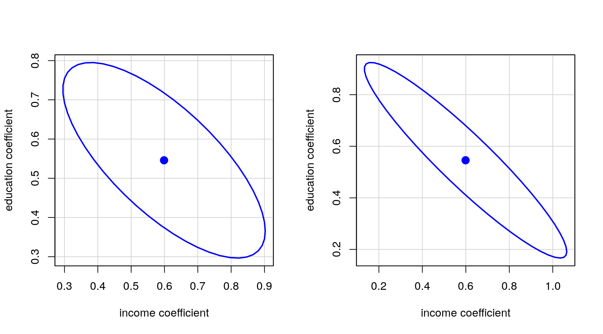
2.5 Medidas de influência
Influence Index Plot
Index plots of influence and related diagnostics for a regression model.
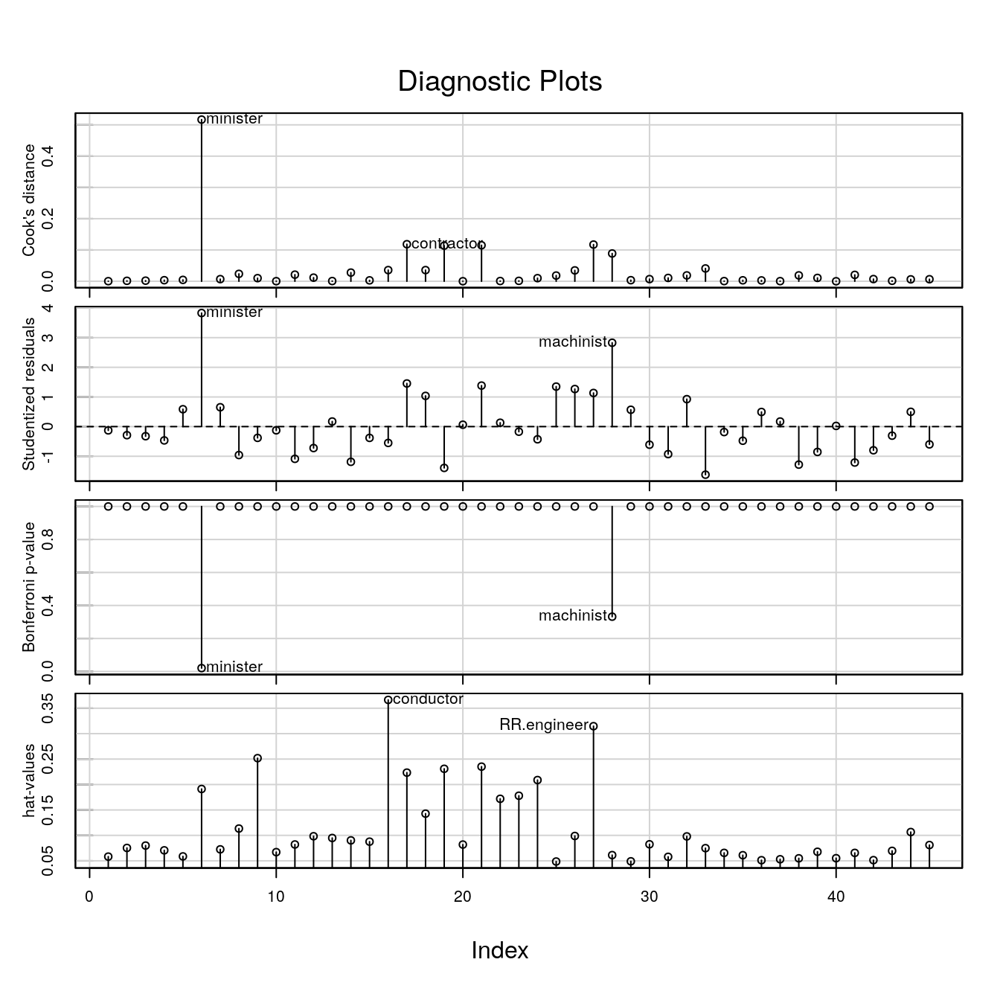
2.6 Impacto de observações em estimativas
dfbeta and dfbetas Index Plots
Display index plots of dfbeta (effect on coefficients of deleting each observation in turn) and dfbetas (effect on coefficients of deleting each observation in turn, standardized by a deleted estimate of the coefficient standard error).
In the plot of dfbeta, horizontal lines are drawn at 0 and +/- one standard error; in the plot of dfbetas, horizontal lines are drawn and 0 and +/- 1.
Where bj is the coefficient computed using all of the data, and b(−i)j is the same coefficient computed with case i omitted
A standardized version, dfbetasij, divides dfbetaij by an estimate of the standard error of bj computed with case i removed.
2.7 Parâmetro de dispersão
Scale estimate for a regression model
## [1] 13.369032.8 Fator de inflação de variância
Variance Inflation Factors
Calculates variance-inflation and generalized variance-inflation factors for linear, generalized linear, and other models.
VIF are interpretable as the inflation in size of the confidence ellipse or ellipsoid for the coefficients of the term in comparison with what would be obtained for orthogonal data.
## income education
## 2.1049 2.1049## GVIF Df GVIF^(1/(2*Df))
## income 2.209178 1 1.486330
## education 5.297584 1 2.301648
## type 5.098592 2 1.5026662.9 Seleção de regressoras
Plot Output from regsubsets Function in leaps package
The regsubsets function in the leaps package finds optimal subsets of predictors based on some criterion statistic. This function plots a measure of fit against subset size.
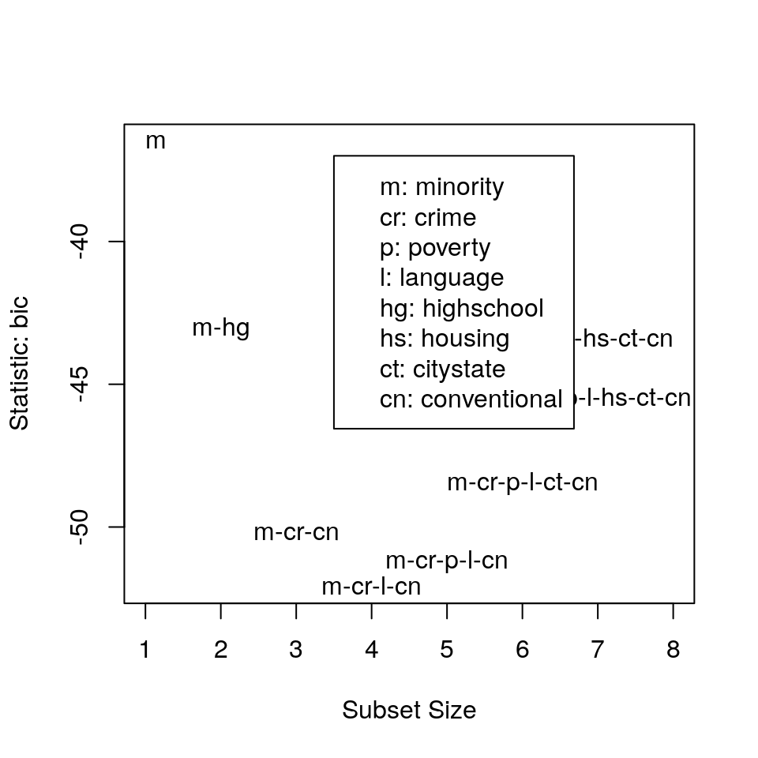
2.10 Inverse Response Plots to Transform the Response
Plot the response Y on the vertical axis and the fitted values Yhat on the horizontal axis. Uses nls to estimate lambda in the function Yhat = b0 + b1(Y)^(lambda). Adds the fitted curve to the plot. Only lm.
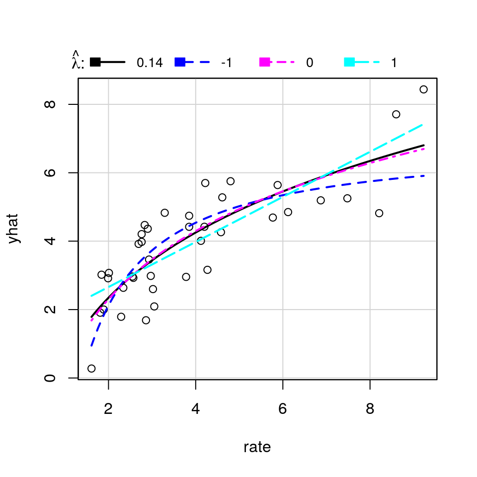
## lambda RSS
## 1 0.1350783 31.57739
## 2 -1.0000000 35.45785
## 3 0.0000000 31.63514
## 4 1.0000000 33.689582.11 Modelo marginal
Marginal Model Plotting
For a regression object, draw a plot of the response on the vertical axis versus a linear combination u of regressors in the mean function on the horizontal axis.
Added to the plot are a smooth for the graph, along with a smooth from the plot of the fitted values on u. mmps is an alias for marginalModelPlots, and mmp is an alias for marginalModelPlot.
2.11.3 Exemplo 3
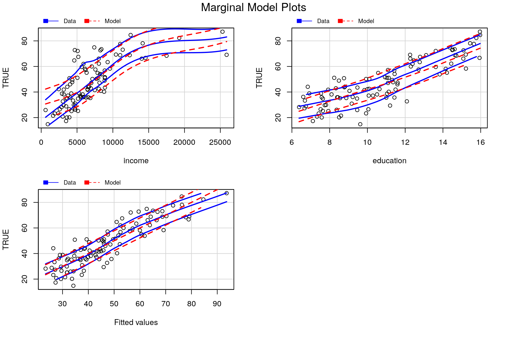
2.11.5 Exemplo 5
# logisitic regression example
# smoothers return warning messages.
# fit a separate smoother and color for each type of occupation.
m1 <- glm(lfp ~ ., family=binomial, data=Mroz)
mmps(m1)## Warning in mmps(m1): Interactions and/or factors skipped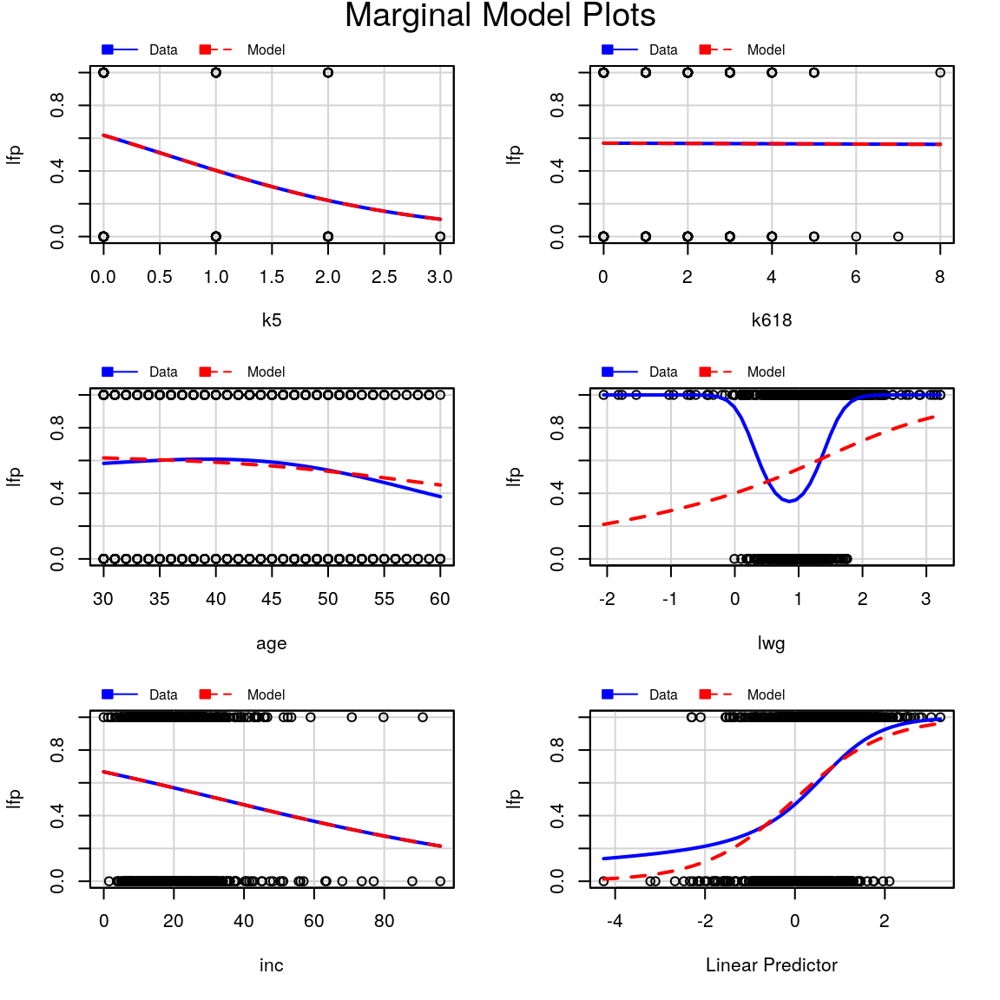
2.12 Modelo Marginal e Conditional
Draw Linear Model Marginal and Conditional Plots in Parallel or Overlaid
Draws two graphs or overlays the two graphs. For a response Y and a regressor X, the first plot is the marginal plot of Y versus X with both variables centered, visualizing the conditional distribution of Y given X ignoring all other regressors.
The second plot is an added-variable for X after all other regressors, visualizing the conditional distribution of Y given X after adjusting for all other predictors.
The second conditional plot is the added-variable plot of e(Y|Z) versus e(X|Z) where e(a|b) means the Pearson residuals from the regression of a on b
2.12.1 Exemplo 1
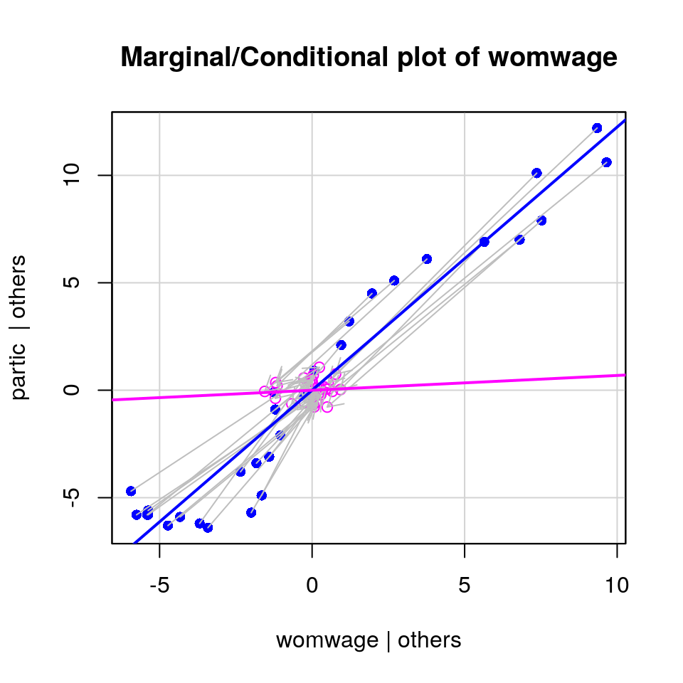
2.13 QQ-plot
Quantile-Comparison Plot
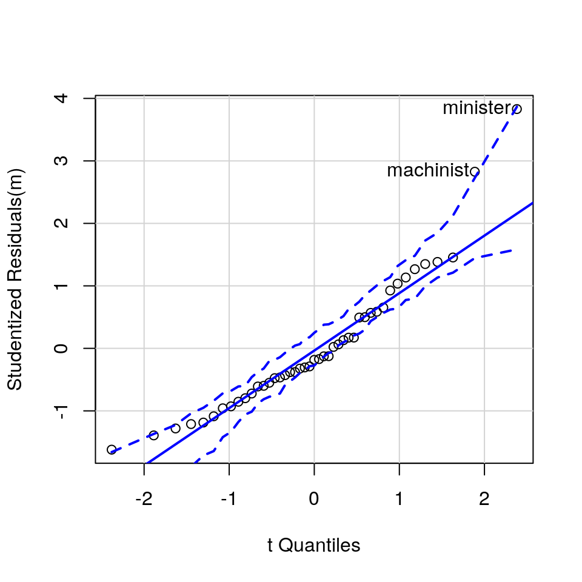
## minister machinist
## 6 282.14 Gráfico de resíduos
Residual Plots for Linear and Generalized Linear Models
2.14.1 Exemplo 1

## Test stat Pr(>|Test stat|)
## income -4.5624 1.453e-05 ***
## Tukey test -4.5624 5.057e-06 ***
## ---
## Signif. codes: 0 '***' 0.001 '**' 0.01 '*' 0.05 '.' 0.1 ' ' 12.15 Regression Influence Plot
“Bubble” plot of Studentized residuals versus hat values, with the areas of the circles representing the observations proportional to the value Cook’s distance. Vertical reference lines are drawn at twice and three times the average hat value, horizontal reference lines at -2, 0, and 2 on the Studentized-residual scale.
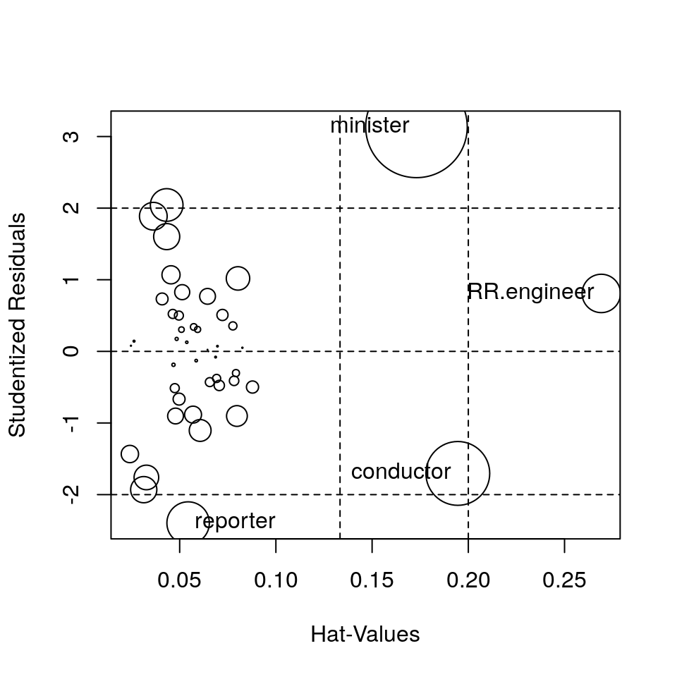
## StudRes Hat CookD
## minister 3.1345186 0.17305816 0.56637974
## reporter -2.3970224 0.05439356 0.09898456
## conductor -1.7040324 0.19454165 0.22364122
## RR.engineer 0.8089221 0.26908963 0.080968072.16 Spread-Level Plots
Creates plots for examining the possible dependence of spread on level, or an extension of these plots to the studentized residuals from linear models.
A spread-level plot (Tukey, 1977) is a scatterplot of the logarithm of the interquartile range, which measures spread, versus the logarithm of the withingroup median, which measures level. Interquartile ranges and medians are insensitive to a few outliers, and so the spread-level plot provides a robust representation of the dependence of spread on level.
2.16.1 Exemplo 1
par(mfrow = c(1,2))
m1 <- glm(interlocks + 1 ~ assets + sector + nation, data=Ornstein,
family = 'Gamma')
slp(m1)##
## Suggested power transformation: 1.389745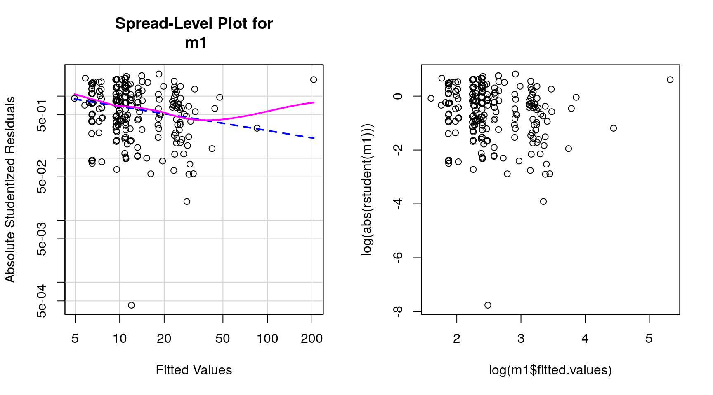
2.16.2 Exemplo 2
## Warning in spreadLevelPlot.lm(...):
## 1 negative fitted value removed##
## Suggested power transformation: 0.4096738## Warning in log(m2$fitted.values): NaNs produzidos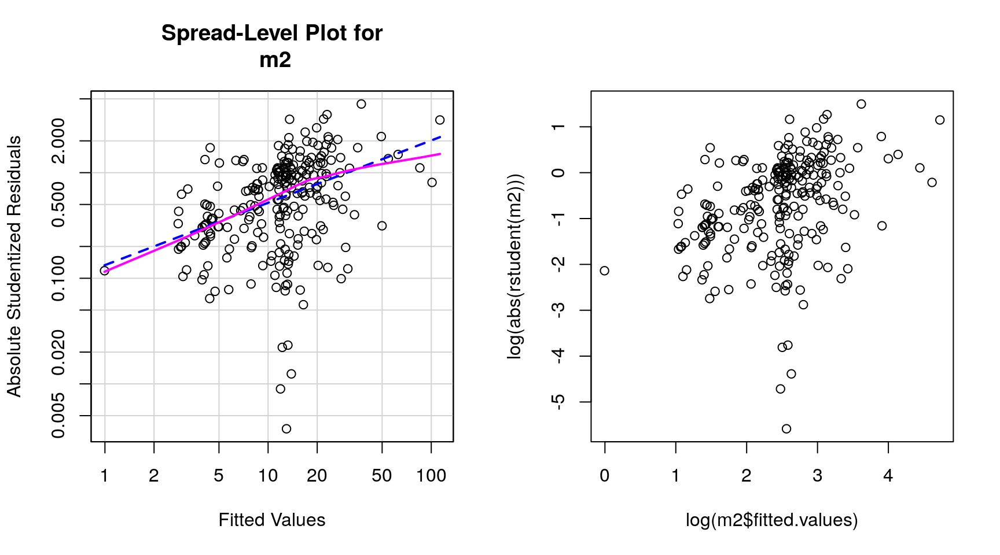
2.17 Gráfico de resíduo parcial
Component+Residual (Partial Residual) Plots
Construct component+residual plots, also called partial-residual plots, for linear and generalized linear models.
The model cannot contain interactions, but can contain factors. Parallel boxplots of the partial residuals are drawn for the levels of a factor.
2.17.3 Exemplo 3
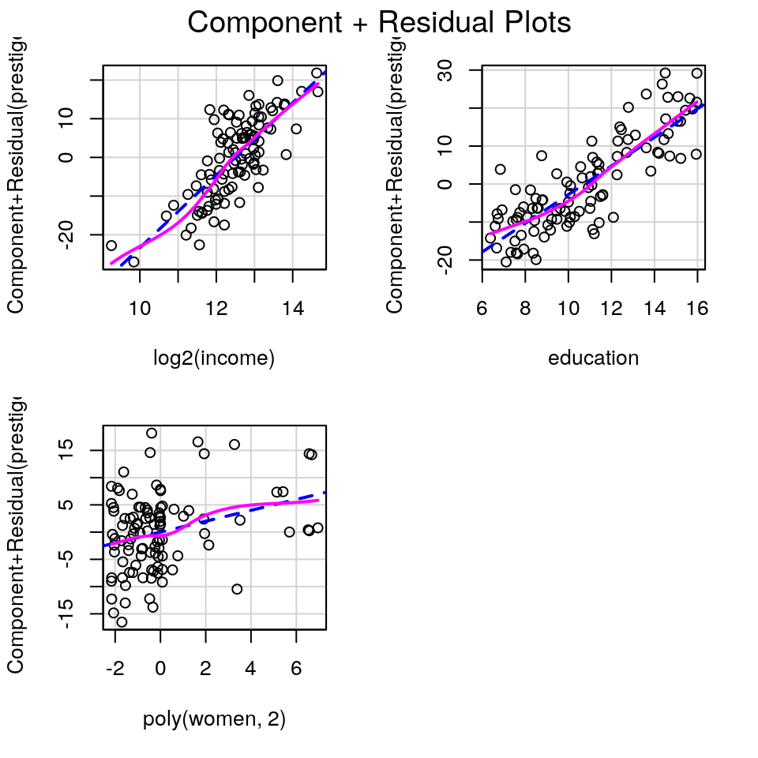
2.18 Ceres Plots
Ceres plots are a generalization of component+residual (partial residual) plots that are less prone to leakage of nonlinearity among the predictors.
The model cannot contain interactions, but can contain factors. Factors may be present in the model, but Ceres plots cannot be drawn for them.
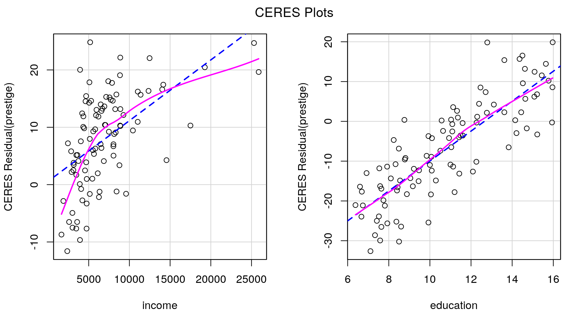
2.19 Gráfico de variável adicionada
Added-Variable Plots
Construct added-variable, also called partial-regression, plots for linear and generalized linear models.
2.19.2 Exemplo 2
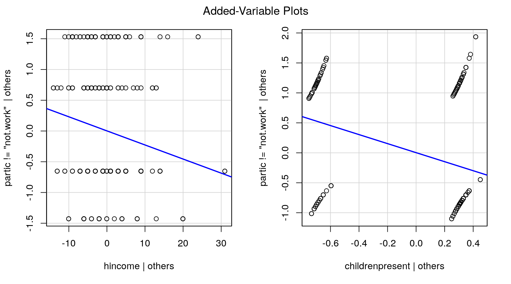
2.19.3 Exemplo 3
m1 <- lm(partic ~ tfr + menwage + womwage + debt + parttime, Bfox)
par(mfrow=c(1,3))
# marginal plot, ignoring other predictors:
with(Bfox, dataEllipse(womwage, partic, levels=0.5))
abline(lm(partic ~ womwage, Bfox), col="red", lwd=2)
# AV plot, adjusting for others:
avPlots(m1, ~ womwage, ellipse=list(levels=0.5))
# AV plot, adjusting and scaling as in marginal plot
avPlots(m1, ~ womwage, marginal.scale=TRUE, ellipse=list(levels=0.5))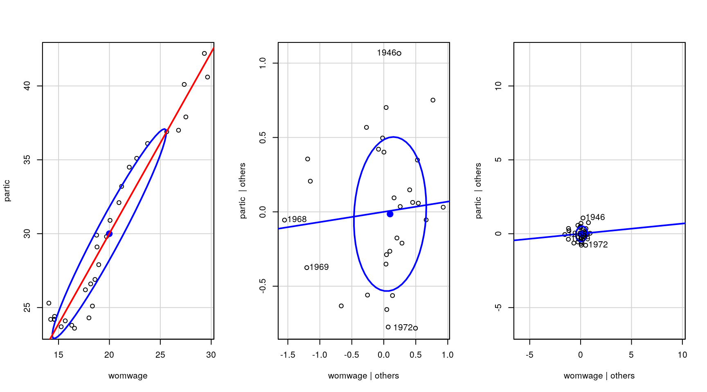
2.20 Regression Leverage Plots
Regression Leverage Plots
Generalization, of added-variable plots to multiple-df terms in a linear model.
When a term has just 1 df, the leverage plot is a rescaled version of the usual added-variable (partial-regression) plot.
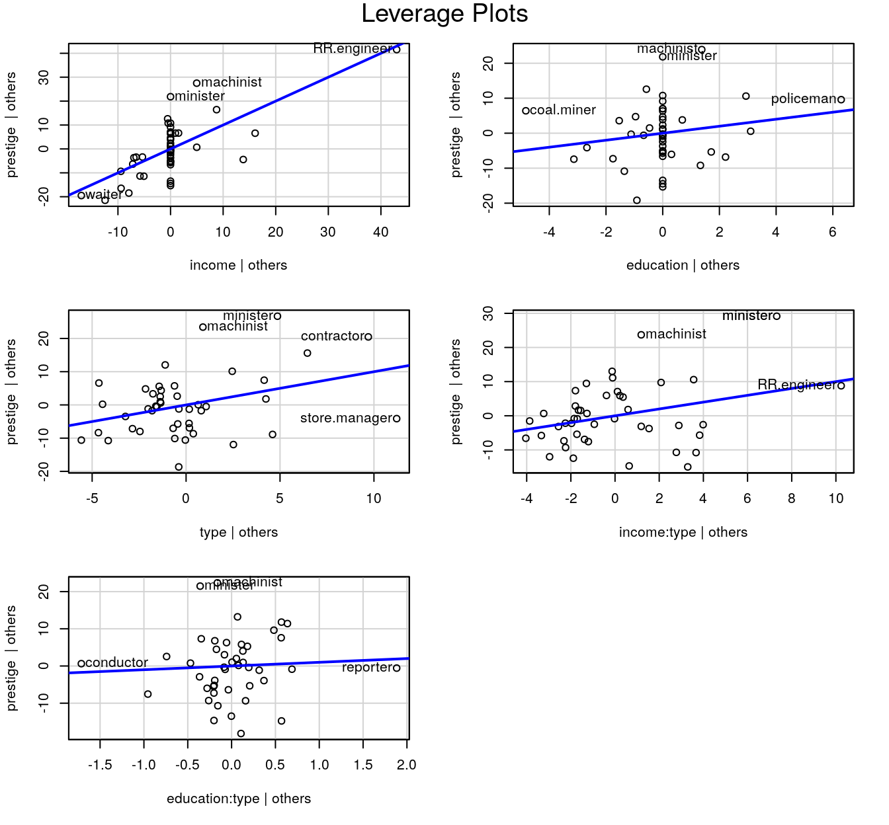